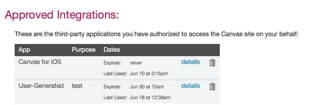
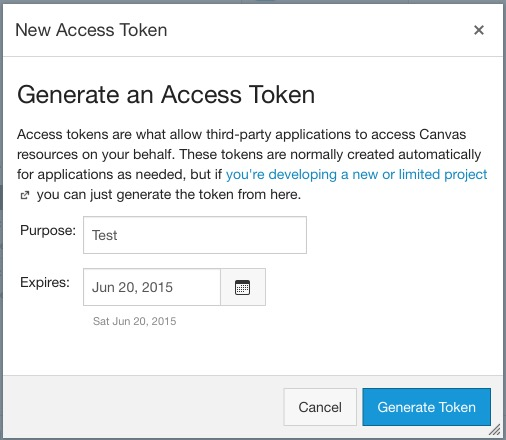
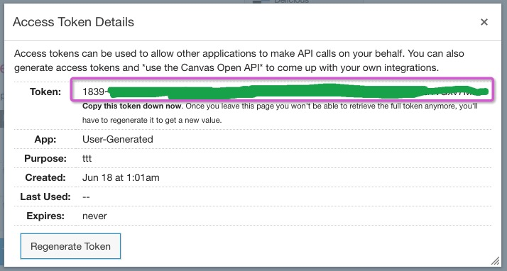

它是 Canvas 用于识别你的身份的字符串。每个账户可以有多个 Access Token。
1. 登录你的Canvas, 点击右上角的 Settings
2. 滚动到页面底部，在 Approved Integrations 中，你可以看到现有的 Access Token列表。
3. 点击 New Access Token 按钮。在 Purpose 中可以随便填写任何信息，如「Test」。在 Expires 中选择此 Access Token 何时过期。由于现在是用于测试，加上安全考虑，建议选择几天或数星期后过期。
4. 点击 Generate Token 按钮。之后在 Token 一栏中复制你的Access Token，并粘贴到 Better Canvas 的提示框中。注意，此字符串在关闭窗口之后就无法再查看。
5. 你可以随时删除此 Access Token 来禁止 Better Canvas 使用它。另外，此 token 过期之后你仍然可以重新申请一个。